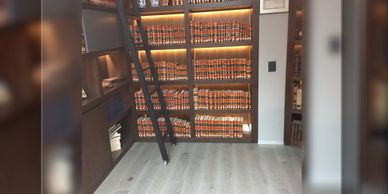

La Carpeta de Investigación constituye el conjunto de registros que contienen las actividades de investigación realizadas por el agente del Ministerio Público, auxiliado de la policía y de los peritos, así como del asesor jurídico y el defensor.
El amparo es una acción o un recurso, dependiendo de la legislación del país de que se trate, que tutela los derechos constitucionales del ciudadano, y del que conoce un tribunal específico como un Tribunal Constitucional, Corte Suprema, o bien un juez tribunal ordinario, según lo dispuesto en la legislación procesal
En el sistema inquisitivo los procesos y juicios penales son burocráticos y lentos, escritos en expedientes interminables y solo el que tiene interés jurídico accede al expediente. En el sistema acusatorio las audiencias serán públicas, con presencia del juez y de las partes que intervienen en el procedimiento
Esta etapa se inicia con el conocimiento o sospecha de la comisión de un hecho presuntamente delictivo y puede ser promovida por los denunciantes o hacerse de oficio, cuando se trate de un delito de persecución pública.
Procederá la extradición de una persona cuando: Se cometa el delito[6] que se persigue en el territorio del Estado requirente o en otro territorio, siempre y cuando: Debe estar previsto el delito en las leyes del estado requirente; La persona sea nacional del Estado requirente y tenga jurisdicción para juzgarlo.
La ejecución de sentencia es una de las funciones que los órganos jurisdiccionales desarrollan en el ejercicio de la potestad jurisdiccional y se lleva a cabo cuando la obligación impuesta en la sentencia no se cumple voluntariamente por el que haya sido condenado.
FIRMA
Nassar Nassar y Asociados
Es una firma de abogados fundada en sus orígenes como Nassar Daw y Asociados en el año de 1984, dedicada principalmente al litigio y asesoría en materia penal en sus diversas manifestaciones e instancias. Encabezado por el licenciado José Luis Nassar Daw, como socio fundador, el despacho demanda el compromiso ético, académico, profesional y personal de todos sus integrantes. Nos distingue la calidad y excelencia, producto del trabajo en equipo. Somos promotores de una colegiación obligatoria que permita responder alas exigencias sociales sobre el ejercicio de nuestra profesión. Tanto los abogados que integran la firma, como los pasantes en derecho en proceso de aprendizaje enfatizamos en darle un puntual y personal seguimiento a los asuntos, defendiendo en todo momento los intereses patrocinados.